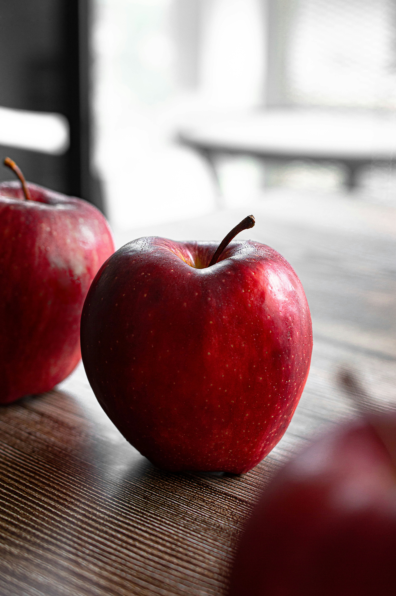

Your priority choice for buying Fresh and Organic Grocery products
Looking for the best deal, we got you. Our easy to sort and categorize search option allows to match the your exact need within matter of seconds. Whether you are looking for preservative free snacks, or organic fruits, we got it.
Featured Product
Organic Avocado Oil
Step up your cooking habit with our high quality organic avocado oil. Suitable for high temperature cooking, making perfect for frying. Nutritionally rich in Vitamin E and Omega-9. Our organic avocado oil is a must- have in your kitchen.
.
Categories
Vegetables
Dairy Products
Frozen Foods
Fruits
Bakery
Snacks
Drinks
.

Organic Apples
Fresh Milk
Whole Wheat Bread
Organic Honey
Best-Selling Product
Almond Butter
Rich in protein and healthy fats. No added sugars or artificial preservatives.
Membership Details
Being a Sal FreshMart Grocery Member provides with exclusive membership program. Follow these steps to grab these perks and have fun with a top rate shopping experience
Sign up for a Sal FreshMart Grocery account.
Pick your membership plan.
Finish your registration by providing required details
Finally Begin shopping with your exclusive membership benefits
Special Offers & Discounts
Enjoy 30% on your first two purchases!!
Sign up today to unlock the exclusive promotions and saving
Learn How Important Organic Foods are
Sal FreshMart Grocery is dedicated to providing you with the healthiest, high quality grocery products to ensure that you and your loved ones have unlimited access to organic food of your choice. We are here to provide you a wide range of grocery items ranging from fresh vegetables and fruit, dairy products, and sustainably and ethical sourced meats at your convenience.